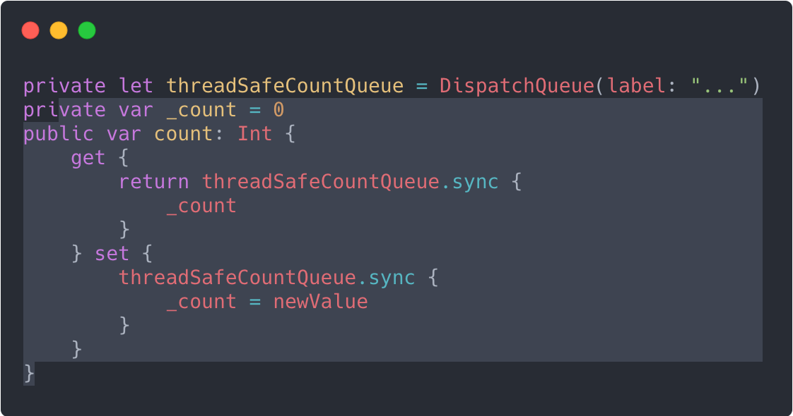
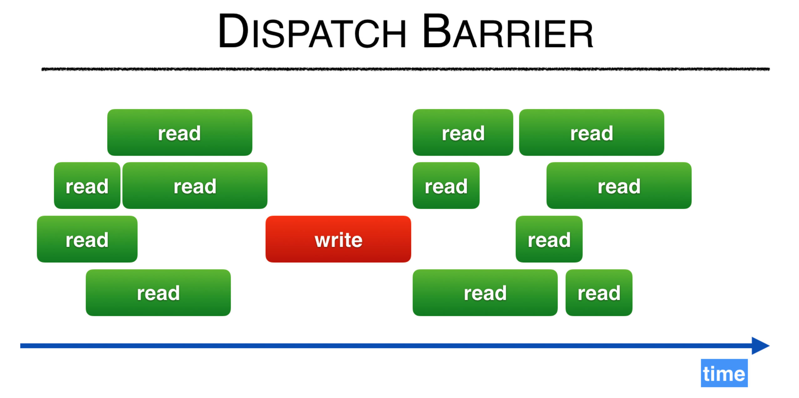
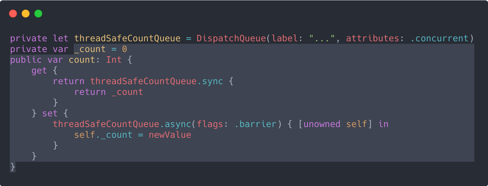
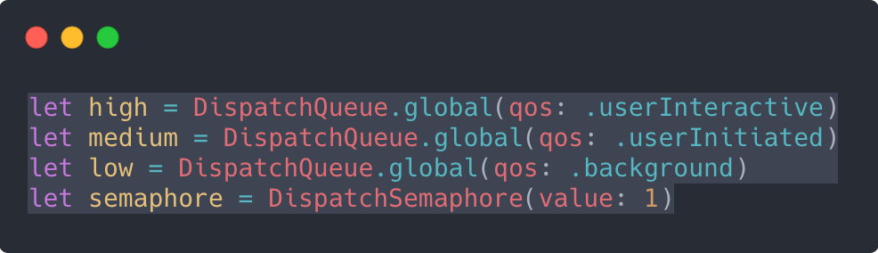
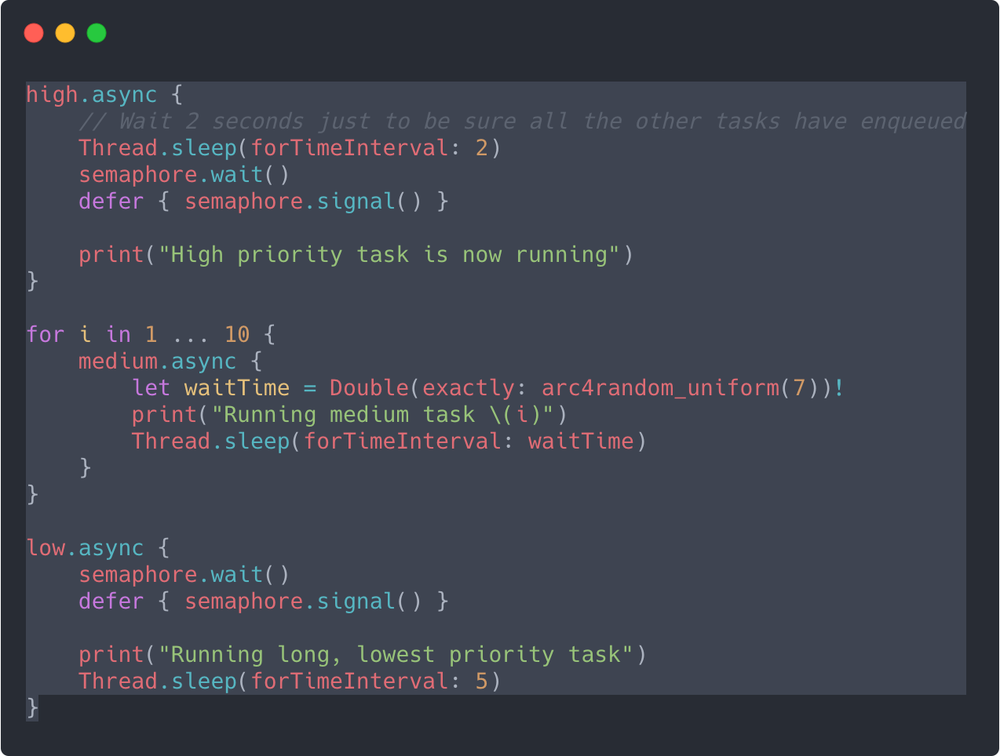
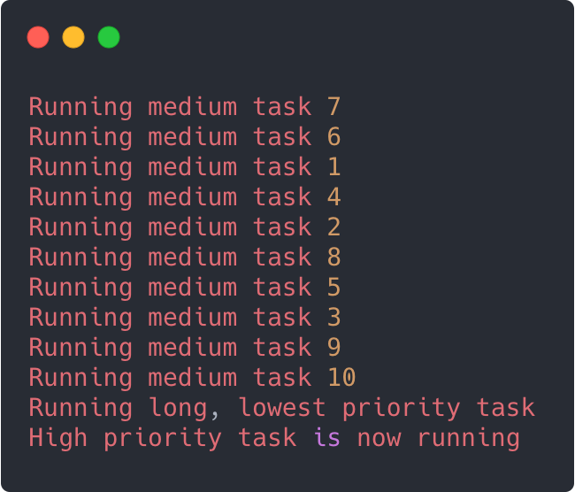
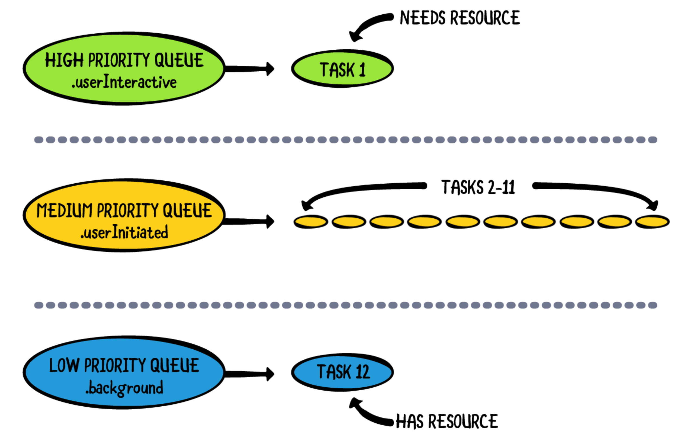

На жаль, незважаючи на всі переваги, що надають черги, вони не є панацеєю від усіх проблем з продуктивністю. Є три добре відомі проблеми, з якими ви можете зіткнутися при реалізації паралелізму в своєму додатку, якщо не будете обережні:
- Стан гонки (Race conditions)
- Взаємне блокування (Deadlock)
- Інверсія приорітетів (Priority inversion)
Стан гонки
Потоки, які спільно використовують один і той же процес, який також включає в себе ваш додаток, спільно використовують один і той же адресний простір. Це означає, що кожен потік намагається читати і записувати в один і той же загальний ресурс. Якщо ви не будете обережні, ви можете зіткнутися з race condition, в яких кілька потоків намагаються одночасно записати щось в одну і ту ж змінну.
Розглянемо приклад, в якому виконуються два потоки, і вони обидва намагаються оновити змінну count вашого об'єкта. Читання і запис - це окремі завдання, які комп'ютер не може виконати як одну операцію. Комп'ютери працюють по тактам (clock cycles), за один такт дозволяється виконати одну операцію.
Note: Не слід плутати такти комп'ютера з тактами на годиннику. IPhone XS має процесор 2,49 ГГц, що означає, що він може виконувати 2 490 000 000 тактів в секунду!
Уявімо, що потік 1 і потік 2 хочуть оновити лічильник по такому прикладу:

Здається досить невинно, так? Але якщо ви розіб’єте цей вираз на компоненти, то вийде, що в кінцевому випадку, процес виглядає приблизно так:
- Завантажити значення змінної count в пам'ять.
- Збільшити значення count на одиницю в пам'яті.
- Записати оновлений count назад на диск.
Наведений вище графік показує:
- Потік 1 зчитує значення 1 з лічильника.
- За другий такт потік 1 оновлює значення в пам'яті до 2, а потік 2 зчитує значення 1 з лічильника.
- За третій такт потік 1 записує значення 2 назад в змінну count. Але потік 2 щойно оновив значення в пам'яті з 1 до 2.
- У четвертому тактовом циклі потік 2 також записує значення 2 у лічильник ... не зважаючи на те, що ви очікували побачити значення 3, оскільки два окремих потоки оновлювали значення.
Цей тип race condition призводить до неймовірно складної відладки коду через недетерміновану природу цих сценаріїв. Якби потік 1 запустився всього на два такти раніше, ви б отримали значення 3, як і очікувалося, але не забувайте, скільки цих тактів відбувається в секунду. Ви можете запустити програму 20 разів і отримати правильний результат, потім запустити її ще раз і отримати звіт про помилку.
Зазвичай ви можете вирішувати race conditions за допомогою послідовних черг. Якщо у вашій програмі є змінна, до якої необхідно звертатися одночасно, ви можете інкапсулювати операції читання і запису в приватну чергу, наприклад:
За замовчуванням threadSafeCountQueue є послідовною чергою.
Пам'ятайте, це означає, що одночасно може бути запущена тільки одна операція. Таким чином, ви контролюєте доступ до змінної і гарантуєте, що тільки один потік одночасно може отримати доступ до змінної. Якщо ви робите прості читання / запис, як описано вище, то це одне з найкращих рішеннь.
Note: Ви можете реалізувати таку ж синхронну чергу для lazy змінних, яка може в подальшому використовуватися декількома потоками. У разі, якщо ви не використаєте синхронну чергу для цієї змінної може відбутися сценарій, коли один потік почне ініціалізацію цієї lazy змінної, а інший потік захоче отримати доступ до ще не ініціалізованої змінної.
Потоковий бар'єр
Іноді ваш ресурс може вимагати більш складної логіки в своїх методах читання та запису, ніж просто модифікація змінної. Часто вирішення таких проблем пов'язані із семафорами. Блокування дуже важко здійснити належним чином. Замість цього ви можете використовувати рішення Apple - dispatch barrier із GCD.
Якщо ви створюєте паралельну чергу, ви можете обробляти стільки завдань для читання, скільки вам знадобиться, і всі вони будуть виконуватися паралельно. Але, коли у змінну потрібно щось записати, вам потрібно заблокувати чергу, щоб завершити всі завдання, які вже відправлені на виконання, і не запускати ніякі нові завдання, поки не завершиться оновлення.
Реалізація dispatch barrier виглядає наступним чином:
Зверніть увагу, як потрібно вказувати, що паралельна черга має виконуватися з бар'єром. Бар'єр не почне діяти, поки не завершаться всі попередні зчитування. Як тільки бар'єр вступає в силу, поведінка черги починає нагадувати послідовну чергу. По завершенні бар’єру всі завдання можуть знову виконуватися паралельно.
Взаємне блокування
Deadlock - досить рідкісне явище в програмуванні на Swift, якщо тільки ви не використовуєте щось на зразок семафорів або інших явних механізмів блокування. Випадковий виклик sync з поточної черги є найпоширенішим випадком, з яким ви можете зіштовхнутися.
Якщо ви використовуєте семафори для управління доступом до кількох ресурсів, переконайтеся, що ви робите запит на ресурси в одинаковому порядку. Якщо потік 1 запрошує молоток, а потім пилу, тоді як потік 2 запрошує пилу, а потім молоток, ви можете отримати deadlock. Потік 1 запрошує і в той же момент отримує молоток, а потік 2 в цей самий момент отримує пилу. Потім потік 1 запрошує доступ на пилу - без звільнення молотка - але потік 2 вже її заблокував, тому потік 1 повинен очікувати. В той час потік 2 запрошує доступ до пили, але вона вже заблокована потоком 1, тому потік 2 повинен чекати, поки пила стане доступною. Обидва потоки тепер перебувають у глухому куті, оскільки жоден з них не може продовжувати свою роботи, поки їх запитані ресурси не будуть звільнені, що ніколи не станеться.
Інверсія приорітетів
Технічно кажучи, інверсія пріоритетів відбувається тоді, коли черзі з нижчою якістю обслуговування присвоюється більш високий системний пріоритет, ніж черзі з вищою QoS. Якщо ви працювали з відправкою завдань в черги, ви, мабуть, помітили конструктор async, який приймає параметр qos.
У розділі 3 «Черги і потоки» було згадано, що QoS черги може змінюватися в залежності від переданого їй завдання. Зазвичай, коли ви відправляєте завдання в чергу, воно отримує пріоритет самої черги. Однак, якщо вам необхідно, ви можете вказати, що конкретна задача повинна мати більш високий чи низький пріоритет.
Якщо ви використовуєте черги .userInitiated і .utility і відправляєте в останню чергу кілька завдань з якістю обслуговування .userInteractive (.userInteractive мають вищий пріоритет, ніж .userInitiated), ви можете опинитися в ситуації, коли останній черзі призначиться вищий пріоритет операційною системою. Раптово всі завдання у черзі, більшість з яких насправді мають якість обслуговування .utility, в кінцевому випадку будуть виконані раніше завдань з черги .userInitiated. Цього просто уникнути: якщо вам потрібно більш високу якість обслуговування, використовуйте іншу чергу!
Найбільш поширена ситуація, коли відбувається інверсія пріоритету - коли черга з більш високою якістю обслуговування спільно використовує ресурс з чергою з більш низькою якістю обслуговування. Коли нижня черга блокує об'єкт, більш висока черга повинна чекати. До тих пір, поки блокування не буде знято, черга з високим пріоритетом фактично зупиняється і нічого не робить, поки виконуються завдання з низьким пріоритетом.
Щоб побачити інверсію пріоритетів на практиці, відкрийте playground PriorityInversion.playground в папці з матеріалами проекту до цієї глави.
У коді ви побачите три потоки з різними значеннями QoS, а також семафор:
Потім різні завдання запускаються в усіх чергах:
Якщо ви відкриєте консоль (⇧ + ⌘ + Y), а потім запустите playground, при кожному запуску ви побачите інший порядок:
Кінцевий результат завжди один і той самий. Завдання з високим пріоритетом завжди виконується після завдань із середнім і низьким пріоритетами через інверсію пріоритетів.
